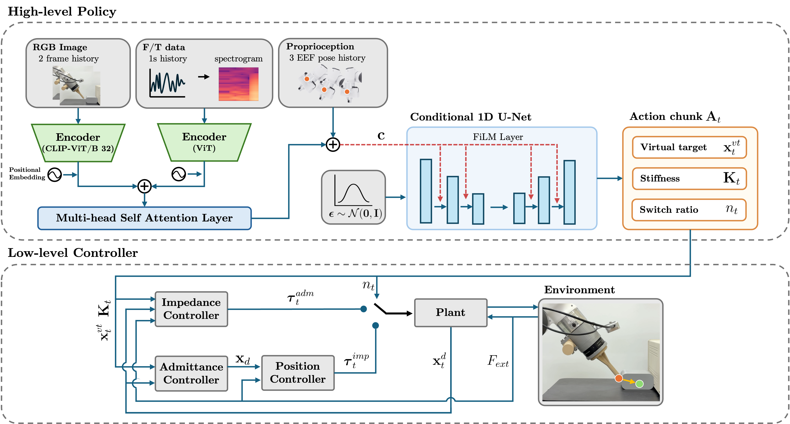
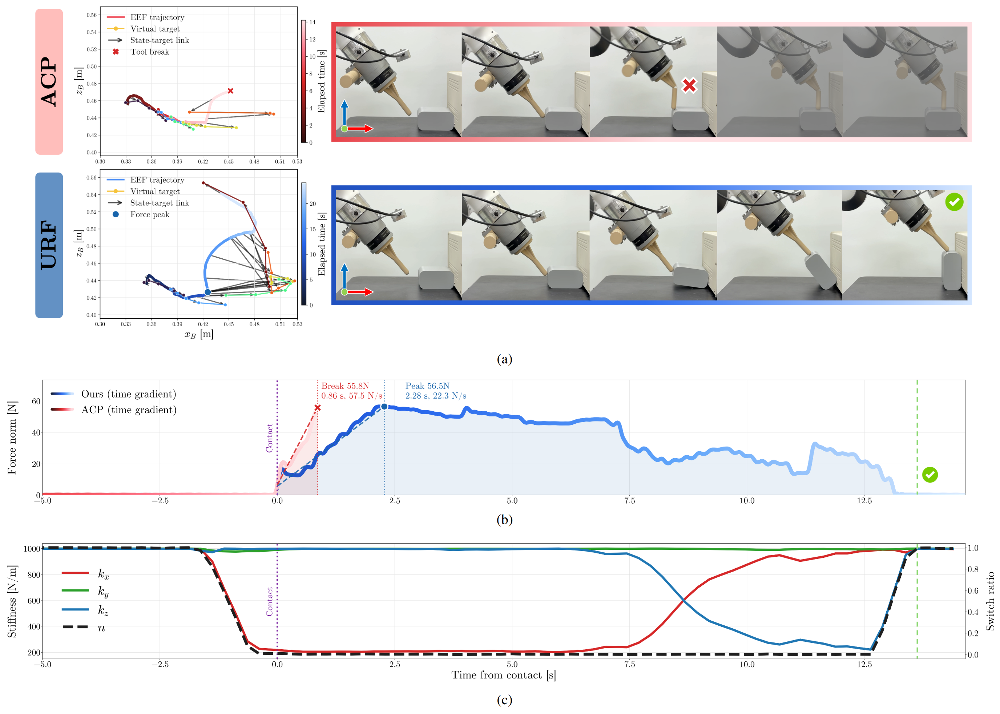
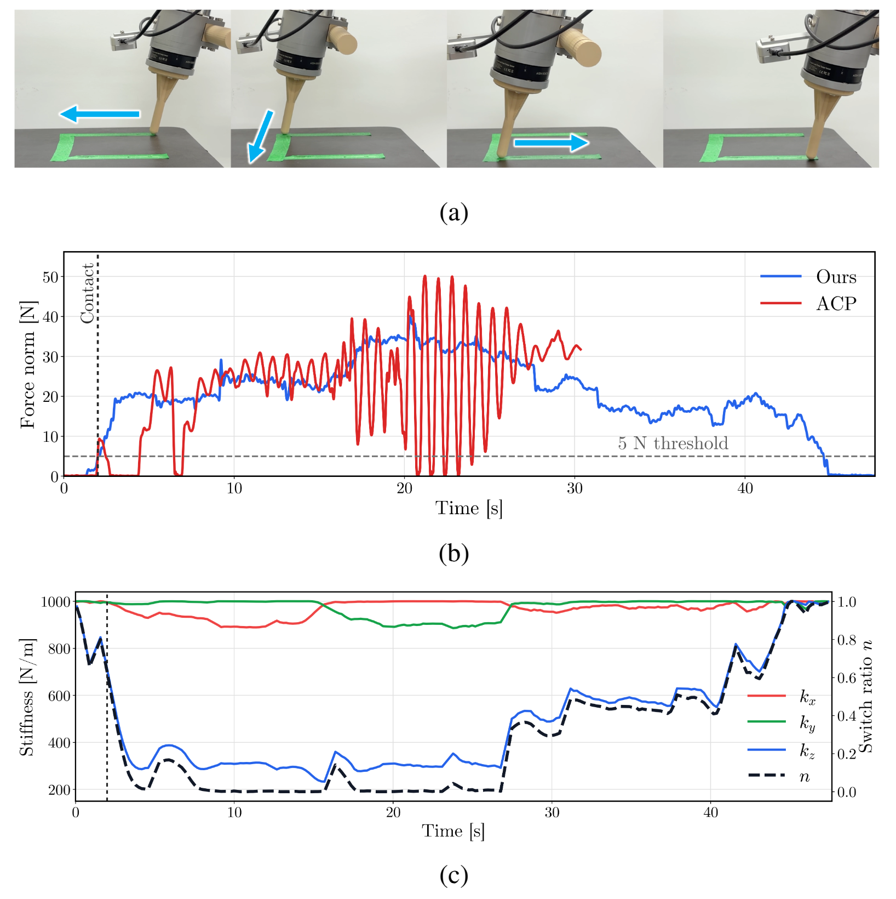

URF Network Architecture
Overview of the proposed URF network architecture and policy-control framework.
PROJECT_ABSTRACT. Replace this paragraph with your paper or project abstract. Keep the first sentence clear enough for visitors who only skim the page, then describe the method, core findings, and why the result matters.
URF improves contact-rich manipulation by predicting both compliant actions and the controller behavior used to execute them. The following figures summarize the architecture and representative task results.

Overview of the proposed URF network architecture and policy-control framework.

The top plot shows the virtual target and actual end-effector trajectories in the x-z plane. Time progression is encoded by a dark-to-light trajectory colormap. ACP fails due to end-tool breakage after contact, whereas URF completes the task. The middle plot shows the force norm over time, and the bottom plot shows the stiffness and switch-ratio predicted by URF.

The first row shows snapshots of the task execution, where the robot follows a line on a rigid surface while applying contact force. URF maintains a stable contact force and completes the task, whereas ACP exhibits large force oscillations before triggering a robot safety stop.
@inproceedings{projectkeyPROJECT_YEAR,
title={PROJECT_TITLE},
author={Author One and Author Two and Author Three},
booktitle={PROJECT_VENUE},
year={PROJECT_YEAR},
url={PROJECT_PAGE_URL}
}